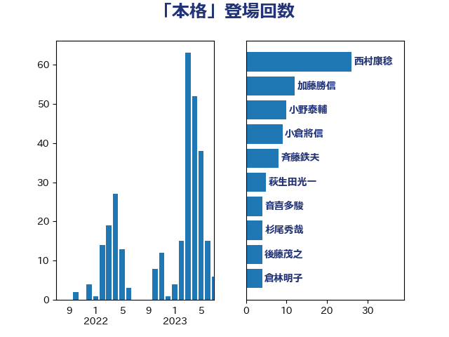

単語「本格」

| 西村康稔 | 自由民主党 | 26 回 |
| 加藤勝信 | 自由民主党 | 12 回 |
| 小野泰輔 | 日本維新の会 | 10 回 |
| 小倉將信 | 自由民主党 | 9 回 |
| 斉藤鉄夫 | 公明党 | 8 回 |
| 萩生田光一 | 自由民主党 | 5 回 |
| 音喜多駿 | 日本維新の会 | 4 回 |
| 杉尾秀哉 | 立憲民主党 | 4 回 |
| 後藤茂之 | 自由民主党 | 4 回 |
| 倉林明子 | 日本共産党 | 4 回 |
| 高橋光男 | 公明党 | 3 回 |
| 芳賀道也 | 国民民主党 | 3 回 |
| 笠井亮 | 日本共産党 | 3 回 |
| 岸田文雄 | 自由民主党 | 3 回 |
| 岩渕友 | 日本共産党 | 3 回 |
| 山田勝彦 | 立憲民主党 | 3 回 |
| 鬼木誠 | 立憲民主党 | 2 回 |
| 高橋千鶴子 | 日本共産党 | 2 回 |
| 阿部知子 | 立憲民主党 | 2 回 |
| 近藤昭一 | 立憲民主党 | 2 回 |
| 足立康史 | 日本維新の会 | 2 回 |
| 石川博崇 | 公明党 | 2 回 |
| 石井拓 | 自由民主党 | 2 回 |
| 片山大介 | 日本維新の会 | 2 回 |
| 渡辺周 | 立憲民主党 | 2 回 |
| 浅田均 | 日本維新の会 | 2 回 |
| 徳永エリ | 立憲民主党 | 2 回 |
| 平山佐知子 | 無所属 | 2 回 |
| 山田太郎 | 自由民主党 | 2 回 |
| 山井和則 | 立憲民主党 | 2 回 |
| 宮崎勝 | 公明党 | 2 回 |
| 堀場幸子 | 日本維新の会 | 2 回 |
| 加田裕之 | 自由民主党 | 2 回 |
| 伊藤岳 | 日本共産党 | 2 回 |
| 齋藤健 | 自由民主党 | 1 回 |
| 鈴木義弘 | 国民民主党 | 1 回 |
| 野田聖子 | 自由民主党 | 1 回 |
| 里見隆治 | 公明党 | 1 回 |
| 進藤金日子 | 自由民主党 | 1 回 |
| 赤池誠章 | 自由民主党 | 1 回 |
| 豊田俊郎 | 自由民主党 | 1 回 |
| 西銘恒三郎 | 自由民主党 | 1 回 |
| 西岡秀子 | 国民民主党 | 1 回 |
| 菊田真紀子 | 立憲民主党 | 1 回 |
| 菅家一郎 | 自由民主党 | 1 回 |
| 舞立昇治 | 自由民主党 | 1 回 |
| 美延映夫 | 日本維新の会 | 1 回 |
| 空本誠喜 | 日本維新の会 | 1 回 |
| 穀田恵二 | 日本共産党 | 1 回 |
| 稲富修二 | 立憲民主党 | 1 回 |
| 石川大我 | 立憲民主党 | 1 回 |
| 石原宏高 | 自由民主党 | 1 回 |
| 石井浩郎 | 自由民主党 | 1 回 |
| 石井啓一 | 公明党 | 1 回 |
| 矢倉克夫 | 公明党 | 1 回 |
| 田村まみ | 国民民主党 | 1 回 |
| 田中健 | 国民民主党 | 1 回 |
| 牧義夫 | 立憲民主党 | 1 回 |
| 片山さつき | 自由民主党 | 1 回 |
| 漆間譲司 | 日本維新の会 | 1 回 |
| 渡辺博道 | 自由民主党 | 1 回 |
| 清水貴之 | 日本維新の会 | 1 回 |
| 浅野哲 | 国民民主党 | 1 回 |
| 河西宏一 | 公明党 | 1 回 |
| 永岡桂子 | 自由民主党 | 1 回 |
| 武部新 | 自由民主党 | 1 回 |
| 横山信一 | 公明党 | 1 回 |
| 柚木道義 | 立憲民主党 | 1 回 |
| 松本剛明 | 自由民主党 | 1 回 |
| 東徹 | 日本維新の会 | 1 回 |
| 本田太郎 | 自由民主党 | 1 回 |
| 本庄知史 | 立憲民主党 | 1 回 |
| 岬麻紀 | 日本維新の会 | 1 回 |
| 岩谷良平 | 日本維新の会 | 1 回 |
| 岡本あき子 | 立憲民主党 | 1 回 |
| 山本順三 | 自由民主党 | 1 回 |
| 尾崎正直 | 自由民主党 | 1 回 |
| 小野田紀美 | 自由民主党 | 1 回 |
| 小西洋之 | 立憲民主党 | 1 回 |
| 小池晃 | 日本共産党 | 1 回 |
| 宮本徹 | 日本共産党 | 1 回 |
| 宮本岳志 | 日本共産党 | 1 回 |
| 守島正 | 日本維新の会 | 1 回 |
| 大島九州男 | れいわ新選組 | 1 回 |
| 塩村あやか | 立憲民主党 | 1 回 |
| 吉井章 | 自由民主党 | 1 回 |
| 佐藤英道 | 公明党 | 1 回 |
| 伊佐進一 | 公明党 | 1 回 |
| 仁比聡平 | 日本共産党 | 1 回 |
| 中西祐介 | 自由民主党 | 1 回 |
| 中山展宏 | 自由民主党 | 1 回 |
| 上月良祐 | 自由民主党 | 1 回 |